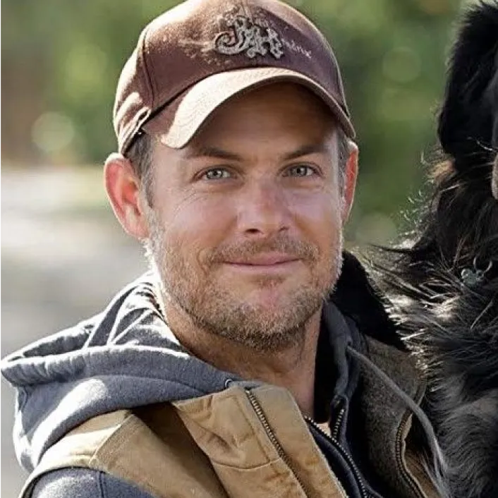
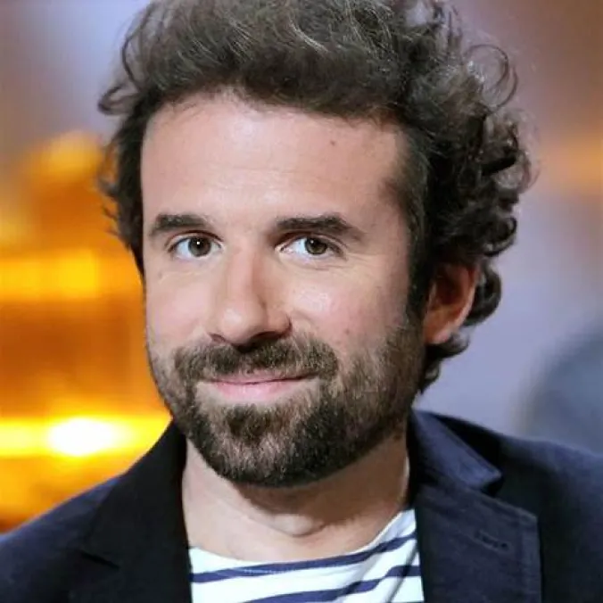

John Chester (Réalisateur & Producteur)
Réalisateur de "The Biggest Little Farm", John Chester est un défenseur de
l'agriculture régénérative. Sa vision du cinéma sensibilise le public à la préservation de la
biodiversité et aux pratiques agricoles durables. Son film primé a inspiré le monde entier à repenser
son lien avec la nature.

Cyril Dion (Réalisateur, Auteur & Militant Écologique)
Cyril Dion, co-réalisateur du film à succès "Demain", est une figure clé de
l'écologie en France. À travers ses documentaires, il explore des solutions concrètes pour un avenir
durable, incitant chacun à devenir acteur du changement.
Marie-Monique Robin (Journaliste, Réalisatrice & Écrivaine)
Spécialiste des enquêtes sur l'écologie, Marie-Monique Robin est l'autrice des
documentaires "Le Monde selon Monsanto" et "Qu'est-ce qu'on attend ?". Son travail expose les enjeux
environnementaux et sociaux à travers des récits puissants et engagés.
Hugo Clément (Journaliste & Réalisateur)
Connu pour ses enquêtes sur la protection animale et environnementale, Hugo
Clément utilise son journalisme d'investigation pour dénoncer les injustices écologiques. Ses reportages
percutants et ses films engagés captivent et mobilisent le grand public.